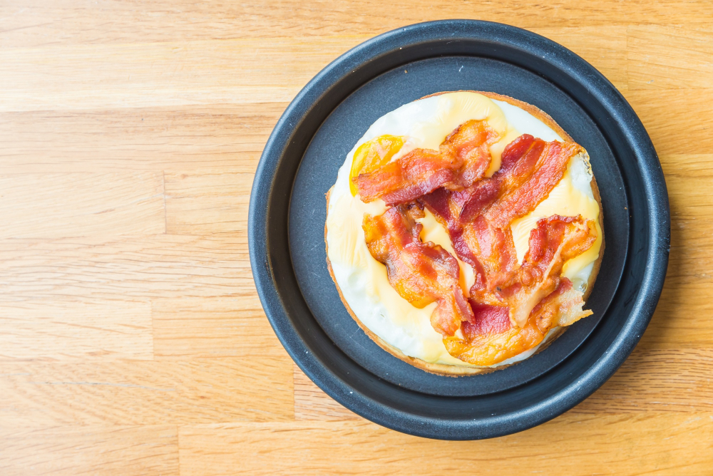

Bacon Pancakes

Decription
Ingredients
- bacon
- egg
- canola oil
- milk
- flour
- salt
- sugar
- baking powder
Steps
- Cook Bacon: Cook the bacon according to package instructions, for this recipe I cook it slightly crispier. Then set the cooked bacon on paper towels to drain and reserve a little of the bacon grease to cook the pancakes in.
- Mix Wet and Dry Ingredients Separately: In a medium bowl, whisk together the egg, oil, and milk. In a separate bowl, whisk together the flour, salt, sugar, and baking powder. Combine the wet and dry ingredients and then mix well.
- Add Bacon Pieces: Finely chop 4 of the cooked strips of bacon and then mix the chopped bacon into the pancake mix.
- Add Bacon Strips to Pan, Cover With Pancake Mix: Heat the skillet or griddle used for the bacon to medium heat. Place a couple of strips of bacon on the skillet, then pour some of the pancake batter over each strip of bacon, just enough to cover each one individually.
- Cook and Flip: Cook the pancakes until bubbles begin to form on the top, and flip each pancake. Continue to cook until the pancakes are golden on each side. Repeat with the remaining strips of bacon and pancake batter.
- Enjoy: Serve fresh with butter and maple syrup!
Home
My Recipes
Mushroom Noodles with White Whine Sauce
Garlic Butter Steak and Potatoe Skillet
Bacon Pancakes